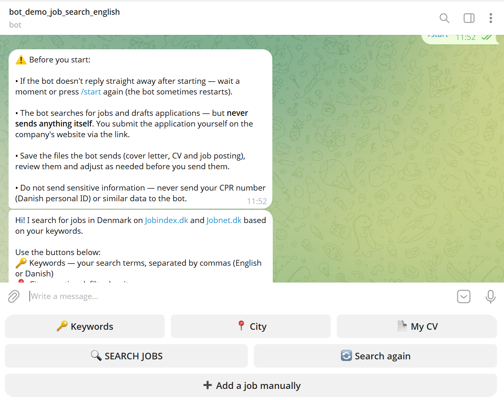
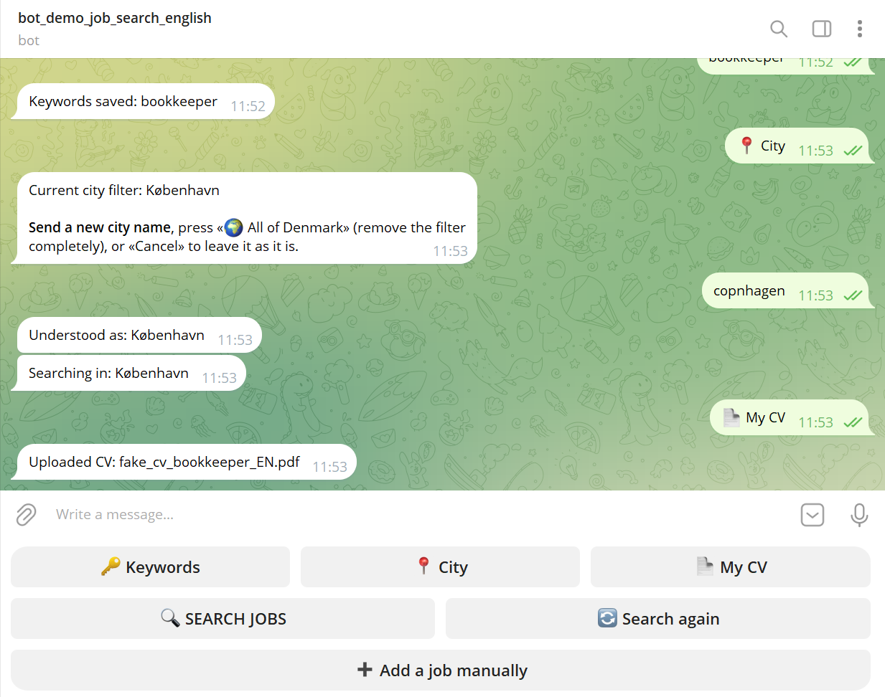
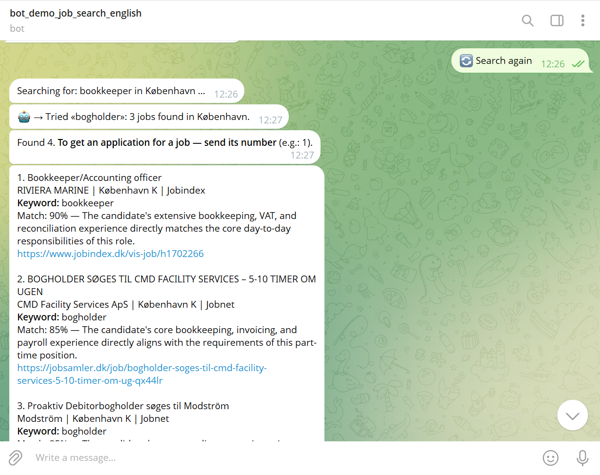
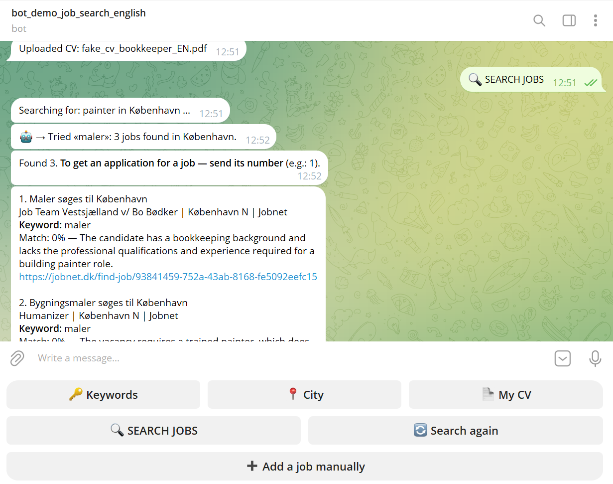
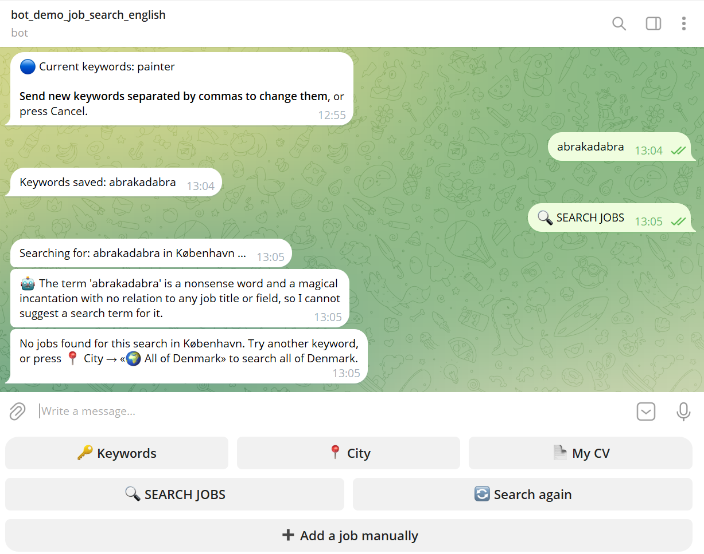
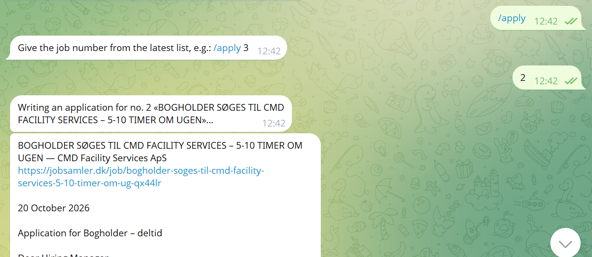
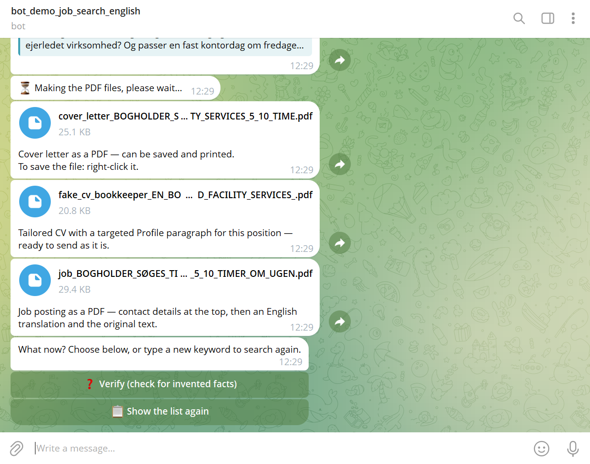
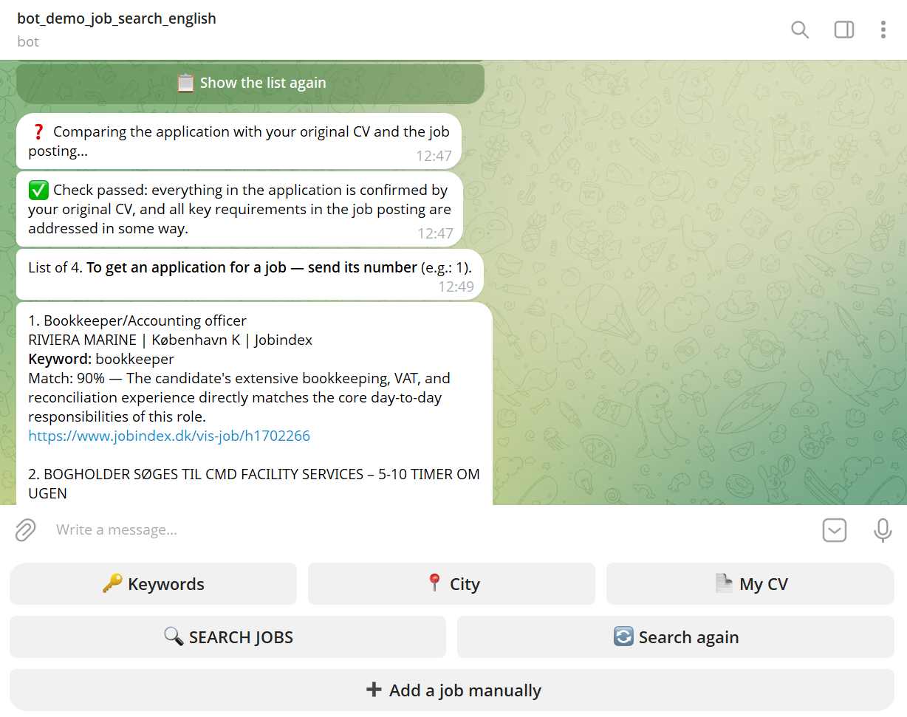
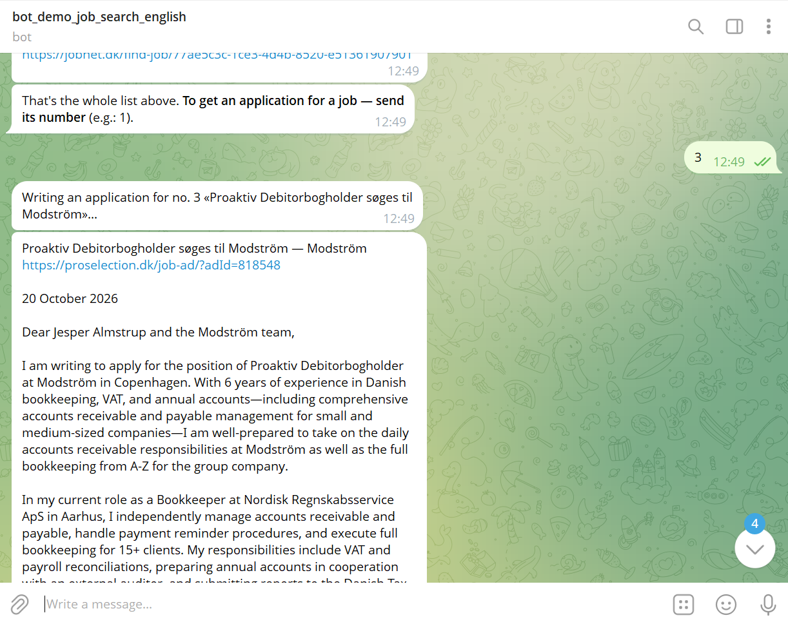

A Telegram bot for job hunting in Denmark
Job search + AI comparison with your CV + ready-to-use application documents
Do not enter sensitive information — never send your CPR number
(Danish personal ID) or similar data to the bot.
A Telegram bot that searches for jobs in Denmark, compares them with your CV using AI, and drafts ready-to-use application documents — so you don't have to do it by hand every time.
The bot fetches jobs directly from Jobindex.dk and Jobnet.dk (Denmark's official public job portal) based on your search terms, with an option to filter by city. Results from several sources are merged, and duplicates are removed automatically.
It isn't just a search for matching words. The bot sends both your CV and each job posting to an AI model (Google Gemini) and asks it to assess the substance, not just formal overlap:
The result is a match percentage (0–100%) with a short explanation. If the CV has no relevant experience for the role, the bot honestly shows 0% — no "consolation percentages". The job still stays on the list — whether to apply is always the person's own choice.
No setup beyond what the bot asks for itself: search terms (in English or Danish), an optional city and a CV (PDF or Word). The bot guides you step by step with buttons, so you don't need to remember any commands.

No AI guesswork here — a reliable lookup against the official list of Denmark's 99 municipalities, plus the English names people are likely to type. Even a typo in an English name ("copnhagen") is recognised as København.

The same CV (an experienced bookkeeper), tested against different positions — to show that the assessment really changes with the substance and doesn't just repeat a fixed number.


Not a fixed list of synonyms programmed in advance. When a search term finds fewer than 3 jobs in the chosen city, Google Gemini gets access to a real search tool (function calling) and decides for itself whether — and which — other word to try instead. Most Danish job postings are written in Danish, so an English search term is often translated into the Danish job title.
Real examples — English search terms
bookkeeper → Tried «bogholder»: 3 jobs found in København.
painter → Tried «maler»: 3 jobs found in København.
Both can be seen in the screenshots on the previous page.
Real example — meaningless search term: "abrakadabra"
The term 'abrakadabra' is a nonsense word and a magical incantation with no relation to any job title or field, so I cannot suggest a search term for it.
This feature was tested with real data during development, and a real weakness was found and fixed: at first, the AI guessed a plausible but wrong word ("pædagog" — teaching assistant) for "abrakadabra", instead of rejecting it. The solution was to give the AI explicit permission to refuse unreasonable input.

The whole flow in practice, with two different jobs from the same list — the bot writes a new, personal application every time, not a template with filled-in fields.




When you pick a specific job, the bot drafts 3 documents:
Afterwards, the application can be checked and corrected with two buttons:
An honestly mentioned gap ("no experience with X yet, but a fast learner") is not an error. Verify only flags claims with no support in the CV.
Fixing is optional. Verify gives advice — the decision is always yours. If a job simply doesn't match your CV (for example, a bookkeeper looking at a painter position), Verify will list many missing requirements. That is a normal and honest result, not something to "fix". You can keep the application exactly as it is, adjust it yourself, or skip the job.
The bot only drafts — it never sends an application on its own. The final step (review, adjust, send) is always the person's own.
The bot is live on Telegram: @demo_job_search_english_bot — t.me/demo_job_search_english_bot
Portfolio page with an interactive demo (no Telegram needed to see the bot in action): halyna-projects.github.io/en/
Do not enter sensitive information — never send your CPR number (Danish personal ID) or similar data to the bot.